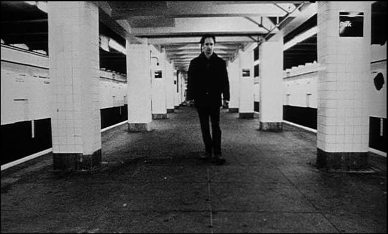

Movie review by : SFAM
Year : 1998
Directed by : Darren Aronofsky
Written by : Darren Aronofsky & Sean Gullette
Degree of Cyberpunk visuals : Medium
Correlation to Cyberpunk themes : High
Rating : 8/10
Key cast members :
Overview: With a production budget hovering around $60,000, first time film director Darren Aronofsky teamed up with actor Sean Gullette to create a powerful addition to the cyberpunk genre. Filmed entirely in grainy black and white handy cam type shots, Pi is an exploration of obsession. Pi ha an ever-increasing frenetic pacing, terrific acting and interesting ideas. Even though it occurs in current times (as opposed to near future as with most cyberpunk flicks), the cyberpunk nature of this flick is embedded both in its ideas and setting.
The Story: Max Cohen (played wonderfully by Sean Gullette) is a neurotic, genius mathematician who obsesses about trying to understand the stock market. He begins to think there is an underlying pattern that underlies the dynamics of the stock market ? a pattern that can be explained in a 216 digit number. Max developeds an organic supercomputer that takes up the bulk of his apartment to further his search by developing tests and programs, but unfortunately, he still can't find the answer. As his obsession deepens, he becomes tortured with headaches and nosebleeds.
1. Mathematics is the language of nature
2. Everything around us can be represented and understood through numbers
3. If you graph the numbers of any system, patterns emerge. Therefore, there are patterns everywhere in nature. So what about the stock market...
My hypothesis, within the stock market there is a pattern, right in front of me...
Max is paranoid in the extreme, and suspiciously assumes everyone is out to get him. Even his old teacher, Sol (Mark Margolis), comes under suspicion after cautioning Max to moderate his obsession. Max believes he is continually being followed (in fact he is). Finally, a Wall Street corporate representative named Marcy (Pamela Hart) offers him the use of a high-powered, secret chip to run his organic supercomputer ? all she wants in return is insight into his results.
While getting coffee, Max meets a nice Hasidic Jew named Lenny (Ben Shenkman) who appears to have an interest in numerology. As Max gets to know him better, it turns out that Lenny is part of a group seeking God's real name, which just happens to be a 216 digit number. This group believes that God has made Max his vessel, and in uncovering the secret of the stock market, Max will simultaneously be able to give them the key to salvation. As Max gets closer to finding the answer, it becomes clear that neither of these groups have Max's best interest in mind - worse, they aren't going to take "No" for an answer.

The Cinematography: Given that Aronofsky has so little to work with in terms of budget, its hard to poke too many holes here. The washed out feel serves to make the viewer feel as if they've been up as long as Max, with ten too many cups of coffee in their system. The grainy black & white visuals work for the most part, although often one is left with the idea that in experimenting to foster a frenetic feel, Aronofsky sometimes goes overboard. Case in point, the room spinning works wonderfully, but then is taken to annoying extremes. This overly artistic experimentation feel generally works wonderfully, but on occasion distracts more from the story and pacing than it adds.
The Sound: As frenetic as the visuals are, these are matched by fast-paced, industrial rhythms and sound FX. The keyboard-laden soundtrack perfectly paces the story, which goes from contemplative moments to fast-paced, paranoid chases and fantasies. Tracks are continually reset to show a resetting of the thought process in the movie, and then spin out of control, again mimicking the transition in the scenes. Pi is one of those movies where the sound is almost as critical to the mood as the visuals itself.
Genius With Insanity: In PI, Aronofsky explores the idea that genius often achieved in combination with insanity. Max Cohen's mind is unique in that he is a master at number pattern assimilation. His obsession with a 216 digit number, which might be the key to understanding nature itself borders on both genius and insanity. Eventually Max starts to see his brain outside his body, sometimes covered with insects, crawling about. Max begins to imagine puncturing the mathematics portion of his brain to end the obsession. Instead, he continues on his quest. In essence, Max needs to become insane in order to truly tap into his genius.
Converging Knowledge Domains ? Economics And Religion: One of the interesting facets of Pi is the degree to which overlapping knowledge domains are explored. In examining whether there is a 216 digit number, of which its meaning and syntax can explain both the stock market and God's will, Aronofsky juxtaposes the meaning of humanity (God's will) with society's insane drive toward wealth creation. Worse, Aronofsky's setting is a world in which our social context ? our human-ness has devolved into a paranoid, lonely landscape, where socialization is no longer about friendship ? it's about survival of the fittest. Max is first and foremost alone. Everyone he interacts with has a nefarious motive. As we move toward a world that is divorced from humanity, one can't help but wonder what our pattern-finding minds will devise. Aronofsky 's answer is clear ? finding the stairway to heaven now becomes a by-product of seeking to greedily game the cornerstone of our society's tally of winners and losers ? the stock market.
Is Max's Computer Self-Aware? I totally missed this connection, but Textpundit below makes an excellent case for this:
Okay, I get what you mean when you say "organic"... but I mean actually a small bit "organic", as in animal. Remember when the computer comes up with the number the first time and then shorts out the processor? When Max goes to change the CPU out, he finds some kind of gooey, organic matter... almost like scrambled brain matter or something similar.
That's where I came up with the idea that the computer became self-aware (even if only for a split second) when it found the number.
I need to watch this again, but the "gooey" matter that Max keeps finding seems clearly organic in nature. So either this is part of his paranoid delusions (like the external brain), or in fact his computer becomes self-aware. If so, it's his computer, not Max, who is truly God's vessel. This actually makes the movie quite a bit more interesting, especially when coupled with the idea that the "vessel" needs to be pure. Clearly no human fits this description, as Max points out to the Rabbi. But Max's response, "It came to me!" is just as flawed - perhaps it came to his now self-aware computer, who is pure. I'm beginning to think I was just a bit slow in grasping this - did anyone else get this interpretation?
The Bottom Line: The teaming of Aronofsky with Sean Gullette is a terrific one, as they almost seem made for each other. The overall feeling of Pi, while not enjoyable to sit through is certainly very memorable. The ideas are interesting, but it's the wonderful acting, immersive mood and frenetic pacing which really sell the film. I must admit though, the first time I saw Pi (years ago, before I created this site) I wasn't as enamored with it as I am now. It really took a second viewing for me to warm up to ? it grows on you.